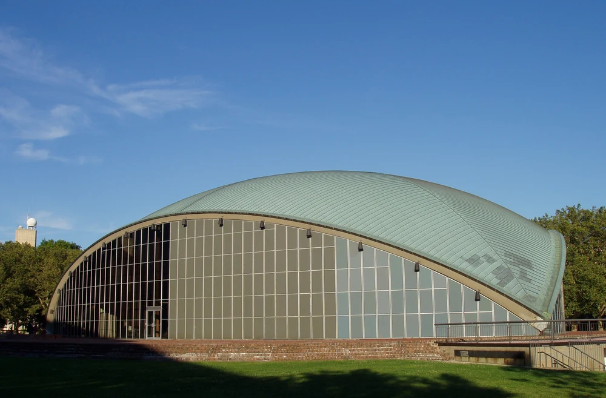

外から、形を見てみよう。
木々の間から見えるイームズ邸。黒い枠が壁や窓を四角く区切り、青や白の面が見えます。2014年の外観写真で、家の内部は見えません。
作品・制作の例7件を紹介しています。実作品画像2点、参照・関連画像0点。画像の収集は継続中です。
20世紀半ばの建築・生活用品をまとめる広い呼称
Mid-century Modern
20世紀のまん中ごろ、家や家具の形が変わりました。
木の板を曲げたり、プラスチックを型でつくったりして、新しい暮らし方を試したのです。
ミッドセンチュリー・モダンは、そうした時代のデザインを広く見る名前です。
実作品を見る

画像を表示できませんでした。下の出典ページで確認できます。
チャールズ＆レイ・イームズ（設計） / 1949（入居は12月24日）
木々の間から見えるイームズ邸。黒い枠が壁や窓を四角く区切り、青や白の面が見えます。2014年の外観写真で、家の内部は見えません。
イームズ邸／Case Study House No. 8 / Photo: Gunnar Klack, CC BY-SA 4.0.
出典で作品・資料を見る ↗CC BY-SA 4.0
原建築と写真の権利は別です。この外観写真の掲載を、図面・内部・家具などの自由利用の許可とは扱いません。
写真：CC BY-SA 4.0。出典・撮影者と画像の変更内容を表示して利用します。
縦横の比率を保って縮小しJPEGで保存。切り抜き・色の変更・描き足しはしていません。
建築外観の利用について、日本・米国などの個別の条件を確認しています。全法域で原建築がパブリックドメインという意味ではありません。
画像の利用条件 ↗実作品を見る

画像を表示できませんでした。下の出典ページで確認できます。
エーロ・サーリネン（建築）／Daderot（写真） / 建築1955年／写真2005年8月
2005年8月の外観写真です。完成した1955年の姿をそのまま記録した写真ではありません。
大きな屋根の曲線と、ガラス面を区切る細い線を比べてみましょう。
この建物は、音楽や舞台、大学の行事に使う講堂です。人が集まる広い空間を、薄い殻のような屋根で包んでいます。
エーロ・サーリネン設計《クレスゲ講堂》1955年。写真：Daderot、2005年8月。Wikimedia Commons、CC BY-SA 3.0。
出典で作品・資料を見る ↗CC BY-SA 3.0
建築の外観を紹介する写真。建築作品の扱いと、写真の利用条件を分けて確認しています。
撮影者Daderotの写真をCC BY-SA 3.0で利用。
全体を保持して縮小し、WebP版も作成。切り抜きや色の変更はしていません。縮小版にもCC BY-SA 3.0を適用。
画像の利用条件 ↗住宅・仕事場
工場で用意できる部材を使い、住まいと仕事場をつくりました。四角く分かれた壁や窓と、周囲の木々の組み合わせから、工業製品と暮らしの関係を考えられます。
作品・資料の出典を見る ↗作品名（出典表記）：Eames House（イームズ邸／Case Study House No. 8）
Charles Eames、Ray Eames（チャールズ＆レイ・イームズ） / 1949（入居は12月24日） / 住宅・仕事場
家具
曲げた合板の殻と、柔らかなクッションを組み合わせました。足を載せる台と一緒に、体を休める姿勢を考えた家具です。
作品・資料の出典を見る ↗作品名（出典表記）：Lounge Chair and Ottoman（ラウンジチェア＆オットマン）
Charles Eames、Ray Eames（チャールズ＆レイ・イームズ）。製造Herman Miller（ハーマンミラー） / 1956 / 家具
家具
座面の下を一本の支えにまとめた椅子です。ガラス繊維を使った樹脂の座面と金属の脚を組み合わせ、ひと続きに見える形をつくります。
作品・資料の出典を見る ↗作品名（出典表記）：Pedestal Chair（ペデスタル・チェア）
Eero Saarinen（エーロ・サーリネン）。製造Knoll Associates（ノール・アソシエイツ） / 1960年頃（クリーヴランド美術館所蔵個体） / 家具
医療用具・工業デザイン
薄い木を重ねて曲げる技術を、負傷した人の脚を支える道具に応用した例。戦時中の材料や製造技術の研究が、その後の家具につながりました。
作品・資料の出典を見る ↗原題：Leg splint
チャールズ＆レイ・イームズ / 1942年 / 医療用具・工業デザイン
このページでは作品画像を掲載していません。所蔵館の出典で作品を確かめられます。
テキスタイル（布のデザイン）
戦後の新しい室内づくりを、家具ではなく布から支えた例。1951年の英国博覧会の室内展示に向けたデザインで、植物を思わせる形を大胆に組み合わせています。
作品・資料の出典を見る ↗原題：Calyx
ルシエンヌ・デイ / 1951年 / テキスタイル（布のデザイン）
このページでは作品画像を掲載していません。所蔵館の出典で作品を確かめられます。
グラフィックデザイン
同じ時代のモダンな表現を、映画の広告から見る例。建築や家具だけでなく、観客へ作品を伝える印刷物にも目を向けます。
作品・資料の出典を見る ↗原題：Poster for the film The Man with the Golden Arm directed by Otto Preminger
ソール・バス / 1955年 / グラフィックデザイン
このページでは作品画像を掲載していません。所蔵館の出典で作品を確かめられます。
建築
三つの点で支える大きな屋根が、柱の少ない広い室内を生み出します。外からは、曲線とガラス面の格子を比べられます。
作品・資料の出典を見る ↗原題：Kresge Auditorium
エーロ・サーリネン / 1955年 / 建築
掲載写真は2005年8月の外観。屋根の仕上げには改修があり、完成当時の写真ではありません。
MITの公式解説がミッドセンチュリー・モダン建築の例として位置づけています。住宅や家具だけでなく、文化活動のための公共空間へ広がった設計を比べられます。
この時代のデザインには、家や家具だけでなく、食器、服、布、広告、映画も含まれます。ロサンゼルス郡立美術館は、カリフォルニアのデザインを、こうした多くの分野を横断して紹介しています。
曲がった木のいすを一つ覚えるだけでなく、それが置かれる家、隣の布や照明、商品を知らせる印刷物も見てみましょう。ものどうしの関係から、どんな生活を目指したのかが見えてきます。
チャールズ＆レイ・イームズは、合板（ごうはん。薄い木を重ねた板）を複雑な形に曲げる実験を続けました。1942年には、負傷した人の脚を支える軽い添え木をつくっています。
戦時中の製造経験は、その後の家具にもつながりました。曲げた形は飾りだけではなく、体を支える面をつくるためでもあります。材料を使える形へ変える技術が、座り方や製造方法を変えたのです。
1945年に始まったケース・スタディ・ハウス計画は、新しい材料や技術で、現代の住まいを考える試みでした。1949年に完成したイームズ邸は、住まいと仕事場を組み合わせています。
二人は、最初の案を変えて草地や木々を残しました。市販の部材を使うことと、土地の特徴を大切にすることを両立させようとしたのです。工業的な四角い枠を見た後は、窓の外にも目を向けてみましょう。
サーリネンの《ペデスタル・チェア》では、座面の下の支えを一本にまとめています。座る部分にはガラス繊維を使った樹脂、脚には金属を使います。見た目の一体感と、実際の材料の組み合わせは別です。
イームズの《ラウンジチェア＆オットマン》は、曲げた合板と柔らかい張り地を組み合わせた休息用の家具です。同じ時代でも、形の軽やかさを目指すいすと、ゆったり休むいすでは、体への答え方が変わります。
イギリスのルシエンヌ・デイが1951年につくった《カリックス》は、植物を思わせる形を、細い線と組み合わせた室内用の布です。花をそのまま写すのではなく、成長するような動きを図案へ変えています。
家具の設計者だけでなく、布や色を考えた人も暮らしを変えました。室内を一人の代表的な男性デザイナーだけの仕事として見ず、それぞれの作者や製造者を確かめたいですね。
ニューヨーク近代美術館の「グッド・デザイン」の展覧会は、比較的手の届きやすい日用品も取り上げました。使いやすさと美しさを、美術館の外の生活につなぐ取り組みです。
けれども、この時代の製品がすべて安かったわけではありません。高級な家具も、広く販売する日用品もあります。「だれでも使える」という理想と、実際に買えた人の範囲は、分けて考える必要があります。
アメリカ・カリフォルニア
温暖な土地の暮らし、住まいや消費の拡大を背景に、家と庭をつなぐ生活が考えられました。
アメリカ・美術館と産業
展覧会やメーカーを通して、家具から食器までのデザインが生活者へ届けられました。
イギリス
ルシエンヌ・デイらは、戦後の暮らしに新しい布の模様を提案しました。
チャールズ＆レイ・イームズが成形合板の脚用添え木を制作。
雑誌『アーツ＆アーキテクチュア』がケース・スタディ・ハウス計画を開始。
イームズ邸が完成し、二人の住まいと仕事場になる。
ニューヨーク近代美術館で「グッド・デザイン」展。翌年1月まで開催。
ルシエンヌ・デイの布《カリックス》が英国祭で紹介される。
イームズの《ラウンジチェア＆オットマン》。
クリーヴランド美術館が所蔵する《ペデスタル・チェア》の年代。設計全体の初年とは区別する。
第二次世界大戦の前後、住まいや生活用品の需要が変わり、材料や製造技術も発達しました。特に戦後のアメリカでは、新しい暮らしのイメージが広がります。ただし、同じ年代でも、国や地域、使う人、製品の価格によって目指すものは違います。
木や革の色と、塗装された面の色を比べます。鮮やかな色があることだけで、この時代の作品とは決まりません。
この呼び名に共通する書体はありません。家具・建築・広告は、それぞれ別の資料で確かめます。
曲げた木の板、体に沿う殻のような座面、一本の支えにまとまる脚。形がどうつくられ、どこに力がかかるかを見ましょう。
イームズ邸では、四角く区切った外壁と、周りに残された木を一緒に見ます。家の中だけでなく、庭との関係も設計の一部です。
北欧モダンと重なる作者や考え方がありますが、同じ意味ではありません。ミッドセンチュリー・モダンは時代を広く捉える言葉です。バウハウスなどの戦前の試みともつながりますが、その形をまねただけではなく、戦後の生活に応じた工夫を見ます。
今もつくられている製品は、設計された年、目の前の品が製造された年、撮影された年を分けて読みましょう。昔の設計をもとにつくった復刻品（ふっこくひん）と、当時の製品は同じ個体ではありません。
名前を開くと、生没年、主な仕事、作品と出典を読めます。ここに挙げた人だけで、この項目の全体を説明するものではありません。
Charles Eames
米国のデザイナー。建築を学び、レイ・イームズとの共同制作で家具、住まい、展示、映像へと活動を広げました。合板を成形する実験を、身体を支える用具や家具の設計へつなげました。
本章で紹介する三作品はレイとの共同制作です。住まい、家具、成形合板の用具へと、二人の仕事が広がっています。
1949年に完成し、12月24日に二人が入居。1945年の未建設案Bridge House（Eero Saarinenも参加）と、完成した配置を区別します。
MoMAは二人を作者として記録。製造者はHerman Millerで、製品の設計者とは別です。
米海軍向けの合板成形技術の仕事。1942年の作品であり、戦後に制作された家具そのものではありません。
人物の出典：ニューヨーク近代美術館 ↗ / イームズ・オフィス ↗ / 米国議会図書館 ↗ / チャールズ＆レイ・イームズ財団 ↗ / ニューヨーク近代美術館 ↗ / メトロポリタン美術館 ↗
Ray Eames
米国の画家・デザイナー。抽象絵画を学び、チャールズ・イームズとの共同制作で家具、建築、展示、映像に携わりました。雑誌の表紙や布のデザインも手がけ、身近な生活のものへ表現を広げました。
本章で紹介する三作品はチャールズとの共同制作です。所蔵館や建物の管理団体の記録でも、レイは共同制作者として紹介されています。
1949年に完成し、12月24日に二人が入居。1945年の未建設案Bridge House（Eero Saarinenも参加）と、完成した配置を区別します。
MoMAは二人を作者として記録。製造者はHerman Millerで、製品の設計者とは別です。
米海軍向けの合板成形技術の仕事。1942年の作品であり、戦後に制作された家具そのものではありません。
人物の出典：ニューヨーク近代美術館 ↗ / イームズ・オフィス ↗ / 米国議会図書館 ↗ / チャールズ＆レイ・イームズ財団 ↗ / ニューヨーク近代美術館 ↗ / メトロポリタン美術館 ↗
Eero Saarinen
フィンランドに生まれ、米国で活動した建築家・家具デザイナー。クランブルックで工業デザインに携わり、家具と建築の両方で曲線や連続する形を探りました。ノールと協働した家具でも知られます。
椅子と講堂を通じ、身体の近くの形と建築の構造を比較します。父である建築家エリエル・サーリネンとは別の人物です。
クリーヴランド美術館が所蔵するこの個体は1960年頃の制作です。シリーズの設計年・発表年と、この個体の制作年は異なります。
建築設計はEero Saarinen。1955年は建築の年代で、公開写真の撮影年とは別です。
Lucienne Day
英国のテキスタイル・デザイナー。戦後の室内用の布に、植物をもとにした抽象的な模様を取り入れました。1951年の英国祭に向けた《カリックス》は、ヒールズとの長い協働につながる仕事です。
家具デザイナーのロビン・デイと活動を並行させながら、独立した仕事を続けました。《カリックス》のデザイナーはルシエンヌです。
《カリックス》には複数の配色があります。ここではV&A所蔵のT.161-1995を参照し、同館の別の配色例CIRC.190-1954とは区別します。
人物の出典：ロビン＆ルシエンヌ・デイ財団 ↗ / ヴィクトリア＆アルバート博物館 ↗
Saul Bass
米国のグラフィックデザイナー。映画のポスターやレコードのジャケットなどを制作しました。《黄金の腕》では、映画を観客に知らせるポスターを担当しています。
家具や建築だけでなく、同時代の視覚伝達を示す例として紹介します。この章で扱うのは映画のポスターで、タイトル映像そのものではありません。
ポスターの作者はSaul Bass。映画監督Otto Premingerや、別媒体のタイトル映像のクレジットとは区別します。
人物の出典：ニューヨーク近代美術館 ↗ / ニューヨーク近代美術館 ↗
住宅・家具に、医療用具、英国の布、映画ポスター、講堂を加えた7例です。同時代の世界のデザイン全体を網羅するものではありません。掲載画像は住宅と講堂の外観2点で、製品や印刷物の画像は引き続き確認しています。
作品・制作の例7件を紹介しています。実作品画像2点、参照・関連画像0点。画像の収集は継続中です。